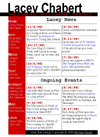
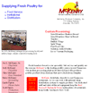
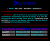
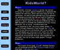
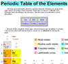
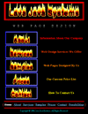
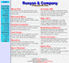

|
Made two years ago, BenRay Photography is the web site for the official photographer of America's Junior Miss, a nationwide competition held annually in Mobile, Alabama. |
| Just finished, CuckooNet is the web site of Michael's employer, Cuckoo Advanced Networking Solutions, a Houston, Texas, based company specializing in network and systems consulting. |
|
 |
Still in the works, Dayah is the author's personal web site. It contains basic information about him, a list of his e-mail addresses, web sites and pages he has made, the components of his computer, as well as his class schedule. |
| Finished six months ago, Lacey Nicole Chabert is a fan site for the upcoming teen starlet Lacey Chabert who stars in Party of Five (Claudia Salinger) as well as the movie Lost in Space (Penny Robinson). Lacey Nicole Chabert receives the most traffic of the author's sites. |
 |
|  |
Completed under a year ago, McKenry is the web site for McKenry Produce Company, Inc., a Knoxville, Tennessee, company that supplies fresh poultry for institutions, distributors, and restaurants. |
| The Deuterium RC5/DES Cracking Team page is an excellent example of dark, sleek styling. Team Deuterium devotes spare CPU cycles to breaking encryption as part of the Distributed.Net effort. |
 |
|  |
Another old but good example of dark design, the "KidsWorld?" page was made to expose the lies of a slander campaign intent on taking down the kids-only IRC network, KidsWorld. |
| The Periodic Table, the author's most well-known page, was created over a year ago. Made entirely of markup, specifically HTML tables, the periodic table page has won over eighty awards and has been featured in magazines, newspapers, and radio shows. |
 |
|  |
The author's first attempt to create a web design business, Lava Java Systems, was created over two years ago. The company has since disbanded and the page taken down due to the company's name's trademark infringement on Sun Microsystems' Java. |
| Completed over three years ago, Runyan & Company is the name of Mrs. Runyan's eighth grade science class. The author designed this page while in the class and it is one of his first works. It was removed after he left the class. |
 |
| | |